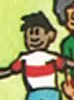
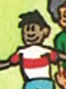

2012 Deluxe Edition
The Rise of Political Correctness
The half-black and half-white man was removed. The characters marveling over him were flipped, since he's no longer an interesting subject:
This scene was altered to make it more clear that the javelins are going through the umpire's clothes. He was also changed from black to white:
This umpire was changed from white to black:
This umpire's starter pistols were redrawn to look less like real guns:
This umpire's starter pistol was removed entirely. The squirt gun was kept, but the races of the kids were flipped, so it's now being shot by the white kid:
Fat people were slimmed down:
More Political Correctness
Violence against women was removed. This woman is no longer getting punched in the back of the head:
In this case, the woman being assaulted was changed to a man. In fact, this is the author Martin Handford—he inserted himself as the victim in several controversial gags. You'll also find him in the Camp Site and Department Store:
This guy's arms were shortened, and his chin was alterd:


 
